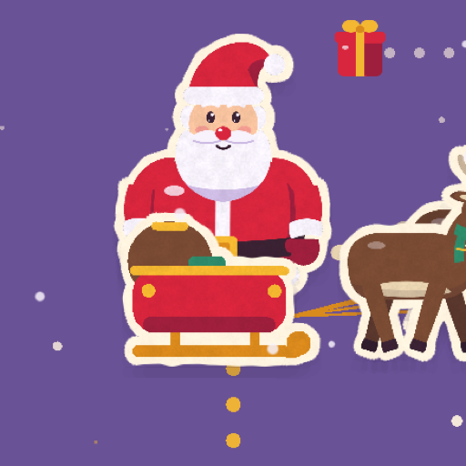

Noel Baba'nın Büyük Gecesi
Destek · ebeveynler için
Soru, hata bildirimi ya da öneri için: noelbaba@finjet.ai
Hata bildirirken cihazınızı, iOS sürümünü ve hangi durakta ne olduğunu yazarsanız daha çabuk çözeriz.
Sık sorulanlar
Oyun neler sunuyor, ne kadarı ücretsiz?
Noel Baba bir Noel gecesinde dünyanın 16 durağına hediye dağıtır; her durak ayrı küçük bir oyundur. Uygulamayı indirmek ücretsizdir ve ilk iki durak (Reykjavik ve Oslo) ücretsiz oynanır. Tek seferlik Tüm Gece satın alımı kalan 14 durağı açar. Abonelik, reklam ve oyun içi para yoktur.
Tüm Gece'yi nasıl satın alırım?
Haritanın sol üst köşesindeki asma kilitli küçük düğmeye (Ebeveyn köşesi) dokunun. Önce bir ebeveyn kontrolü çıkar: yazıyla verilen bir sayıyı (ör. "kırk yedi") rakamla yazmanız istenir; okuma bilmeyen bir çocuk bunu geçemez ve sayı her seferinde değişir. Ardından Satın al'a dokunun; ödeme App Store üzerinden, Apple'ın kendi onay ekranıyla yapılır. Henüz açılmamış duraklar haritada kar bulutunun altında bekler.
Satın aldım ama açılmadı, ya da yeni cihaza geçtim
Haritada Ebeveyn köşesi (asma kilit) › ebeveyn kontrolü › Satın alımları geri yükle'ye dokunun. Satın alım aynı Apple hesabıyla yapıldıysa bütün duraklar yeniden açılır; ikinci kez ödeme alınmaz.
Aile Paylaşımı destekleniyor mu?
Evet. Aile Paylaşımı açıksa Tüm Gece aile grubundaki diğer cihazlarda da açılır; gerekirse orada da Satın alımları geri yükle'ye dokunun.
Çocuğum okuma bilmiyor, oynayabilir mi?
Evet. Oyunda okunacak yazı yoktur; her şey resim, ses ve dokunmayla anlatılır. 3–6 yaş için tasarlandı: büyük dokunma alanları, kaybetme ve süre baskısı yok, takılan çocuğa oyun nazikçe yol gösterir.
Hangi cihazlarda çalışır?
iOS 16 ya da daha yeni sürümlü iPhone ve iPad. İnternet bağlantısı gerekmez; oyun tamamen çevrimdışı çalışır (yalnızca satın alma ve geri yükleme için App Store'a bağlanılır).
Oyun kaydı nerede?
Yalnızca cihazda. Uygulamayı silerseniz ilerleme ve hatıra albümü de silinir; Tüm Gece hakkı ise her zaman geri yüklenebilir.
Santa's Big Night
Support · for parents
Questions, bug reports or ideas: noelbaba@finjet.ai
When reporting a bug, tell us your device, iOS version and which stop it happened at; it helps us fix it faster.
FAQ
What is in the game, and what is free?
On one Christmas night Santa delivers presents at 16 stops around the world; every stop is a different little game. The download is free and the first two stops (Reykjavik and Oslo) are free to play. A one-time The Whole Night purchase unlocks the other 14 stops. No subscription, no ads, no in-game currency.
How do I buy The Whole Night?
Tap the small padlock button in the top-left corner of the map (the Parents' corner). A parental gate appears first: a number written out in words (e.g. "forty-seven") to type in digits; a child who can't read can't pass it, and the number changes every time. Then tap Buy; payment happens through the App Store with Apple's own confirmation. Stops not yet unlocked wait under a snow cloud on the map.
I bought it but it isn't unlocked, or I moved to a new device
On the map, tap Parents' corner (padlock) › parental gate › Restore purchases. If you bought it with the same Apple ID, all stops unlock again at no extra charge.
Is Family Sharing supported?
Yes. With Family Sharing on, The Whole Night unlocks on the other devices in your family group; tap Restore purchases there if needed.
My child can't read yet. Can they play?
Yes. There is no text to read in the game; everything is told with pictures, sound and touch. It is made for ages 3–6: big touch areas, no losing and no timers, and the game gently shows the way when a child gets stuck.
Which devices does it run on?
iPhone and iPad with iOS 16 or later. No internet connection is needed; the game works fully offline (it only talks to the App Store to buy or restore).
Where is the save game?
Only on the device. Deleting the app deletes progress and the souvenir album; The Whole Night can always be restored.